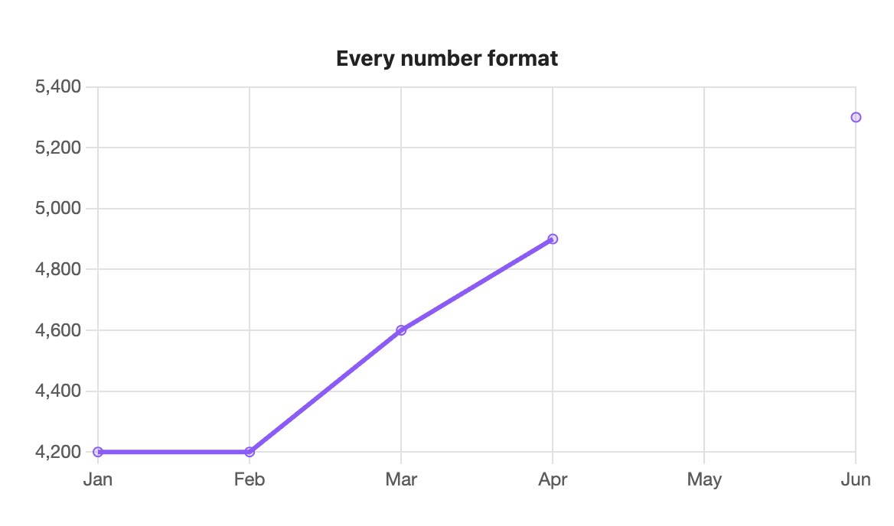

Writing the table
Every chart type reads a standard markdown table. The first column holds the labels, and each other column is one series.
Labels and series

```s-chart
type: bar
title: Monthly revenue
---
| Month | Revenue | Costs |
| ----- | ------- | ----- |
| Jan | 4200 | 3100 |
| Feb | 5100 | 3300 |
| Mar | 6300 | 3500 |
| Apr | 5800 | 3400 |
```Here Month is the label column, so Jan to Apr run along the bottom. Revenue and Costs are two series, named by their headers. Add a Profit column and you get a third series with no other change.
The line of dashes under the header is optional. Rows are drawn in the order you write them.
Numbers
Each cell after the first column must be a number. These forms are all read as numbers:
| You write | Read as |
|---|---|
4200 | 4200 |
4,200 | 4200, the thousands comma is dropped |
$4,200 | 4200, currency symbols ($ € £ ¥ ₹) are dropped |
KWD 4,200 or 4,200 KWD | 4200, three-letter currency codes are dropped |
42% | 42 |
-3.5 | -3.5 |
| an empty cell | a gap |

```s-chart
type: line
title: Every number format
---
| Month | Value |
| ----- | --------- |
| Jan | 4200 |
| Feb | 4,200 |
| Mar | $4,600 |
| Apr | KWD 4,900 |
| May | |
| Jun | 5,300 |
```May is empty, so the line breaks there instead of dropping to zero.
A cell the plugin can't read, such as lots, stops the chart and names the line and column. See Errors and warnings.
Tooltips
Hover over a bar, point or slice (tap on mobile) to see its label, series and value, for example "Feb, Revenue: 5,100". Numbers are formatted for your system's language.
Right-to-left text
Labels, headers and titles in Arabic or Hebrew draw right to left as written.
Large tables
Tables up to 500 rows by 8 series draw in well under a tenth of a second. On line and area charts with more than 50 rows, the dots on each point are hidden so the line stays readable.